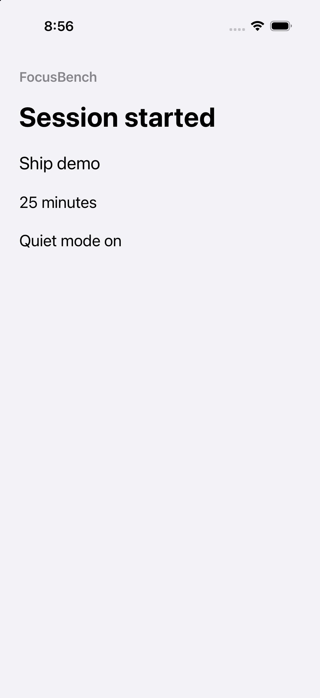
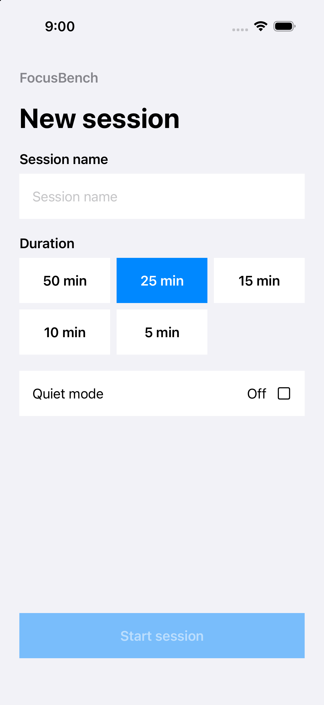
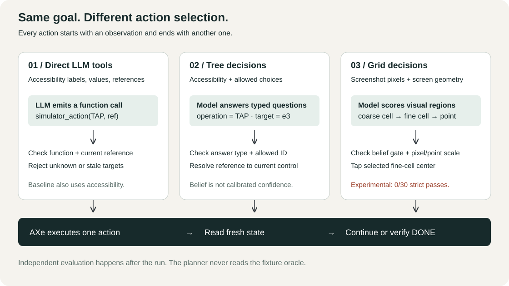
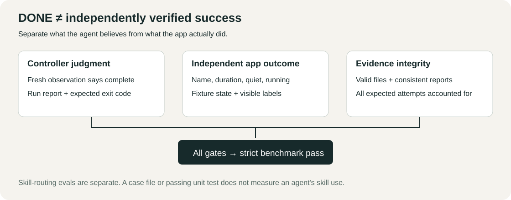

Direct tools
The generative model returns one simulator_action function call, with an operation and a current element reference. The harness checks that reference before acting.
Read the screen. Choose one action. Press. Read again. See what changes when a decision model chooses the action.
Offline recordings and interactive explanations. No keys, running simulator, or model calls needed to learn.


“Decision model” here means a model that answers typed questions over supplied choices or returns a numeric belief. Your program decides what questions to ask, validates the answers, and executes the permitted action.

The generative model returns one simulator_action function call, with an operation and a current element reference. The harness checks that reference before acting.
The program supplies allowed operations and visible semantic targets. Clef, Jev, or Winnow chooses answer IDs; the program resolves them to native actions.
Read the small planner →The model sees pixels, scores coarse and fine regions, then the program converts the chosen center to logical points. No accessibility labels enter this planner.
Read the visual planner →Same recorded goal: start Ship demo for 25 minutes, with Quiet mode on. Each clip is the first basic-scenario episode, chosen consistently across all seven cells.
Original MP4 · native video controls · no autoplay.
Poster shows the final saved screen.
Log steps are independent of video playback. Video and controller clocks differ; events show recorded operations and telemetry, not hidden reasoning or captured model prompts.
Explore a 4 × 8 coarse grid over a saved screenshot. Choose a cell to see its center in pixels and simulator points. The real planner then subdivides the chosen region into 4 × 4 fine cells.
Choose a numbered cell on the screen.
x_points = x_pixels × 402 / 1206
y_points = y_pixels × 874 / 2622These dimensions belong to this recording. Supply your simulator's actual logical geometry; never assume a universal 3× scale.
A model can say it is finished when the app is wrong. It can also stop uncertainly after reaching the right state. Keep those outcomes separate.

Strict pass counts, all 15 attempts per model/mode cell. Failures stay in every denominator. Recorded 5 October 2026.
Run and understand evaluations →
Jev tree reached the native outcome in 15/15 historical attempts but earned 12/15 strict passes. Winnow direct reached 15/15 native outcomes but earned 9/15 strict passes. Controller completion and independent app state answer different questions.
Reported local monetary cost is unknown, not zero. Controller wall time excludes fixture setup and video encoding. Model, hosting, background load, and observation method are confounded.
The same Python controller backs both plugins. Plugin installation adds skills; it does not install AXe, Xcode, provider services, or model weights.
git clone https://github.com/Saik0s/axe-decision-control.git
cd axe-decision-control
uv sync --frozen
uv run axe-control --help
uv run axe-control doctorNative control requires macOS, Xcode, AXe, a booted explicit simulator, and actual logical geometry. Learning and offline checks need no simulator.
Launch your app first. Set AXE_UDID, AXE_POINTS, and OPENROUTER_API_KEY in your local shell. Never commit the key. Cloud calls send the goal, literals and screen state to the selected provider and may incur charges.
uv run axe-control run \
--udid "${AXE_UDID:?Select a simulator}" \
--points "${AXE_POINTS:?Set logical WIDTHxHEIGHT}" \
--provider openrouter --model cloudflare/clef \
--mode tree \
--goal 'Start Ship demo for 25 minutes with Quiet mode on.' \
--text 'Ship demo'.claude-plugin/ Claude Code manifest + marketplace
.codex-plugin/ Codex plugin manifest
skills/ Shared, self-contained agent skills
src/ Bounded Python controller
evals/ Evaluation cases + grading entry point
benchmarks/ Native + inference benchmark harnesses
fixtures/ Synthetic FocusBench SwiftUI app
results/ Dated, immutable raw evidence
docs/ Visual guide + technical referencesInstall Claude Code / Codex plugin
Skills belong in the plugin's skills/ bundle. They contain their own references, so they still work after installation into a host cache.